今天是周末。
本来是休息的日子。
可是为了停工将近10个月的房子。
我们依旧无法停下脚步。
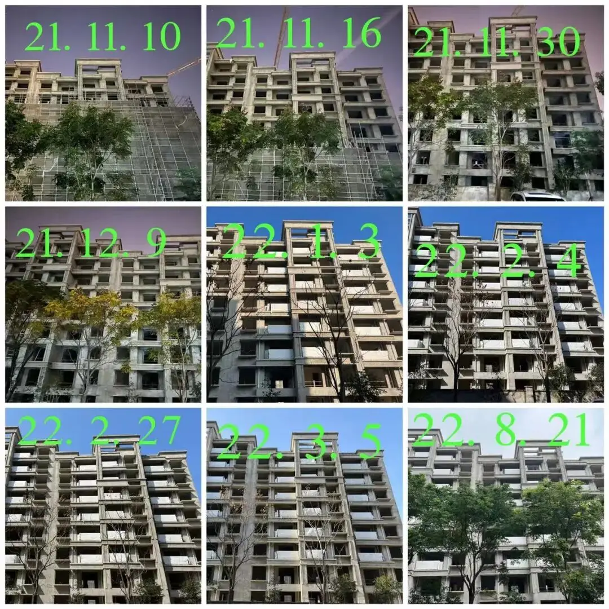
△停工中的经纬学府阳光，位于宝山中环旁上大板块，该区域为上海市五大重点转型区域之一，同时也是宝山建设上海科创中心主阵地的核心承载区之一，开发商为经纬置地有限公司，该楼盘总价在500-600万，均价为5.72万/㎡
早上一面和大家讨论着可能的解决方案，一面安抚着广大业主的情绪。
下午6位业主代表继续拖着疲倦的身体，又和经纬的项目负责人交涉了一个多小时。
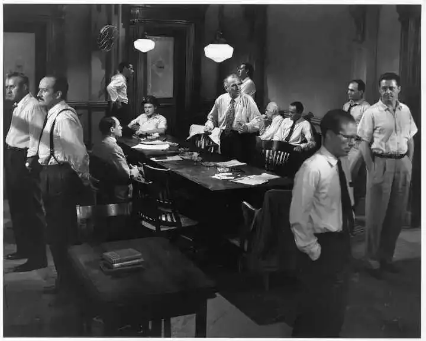
当然，一如既往。
我们得不到肯定的答案。
何时复工，未知。
监管账户情况，告诉了数字。
但是基于经纬前期的表现，看不到真凭实据，不敢信。
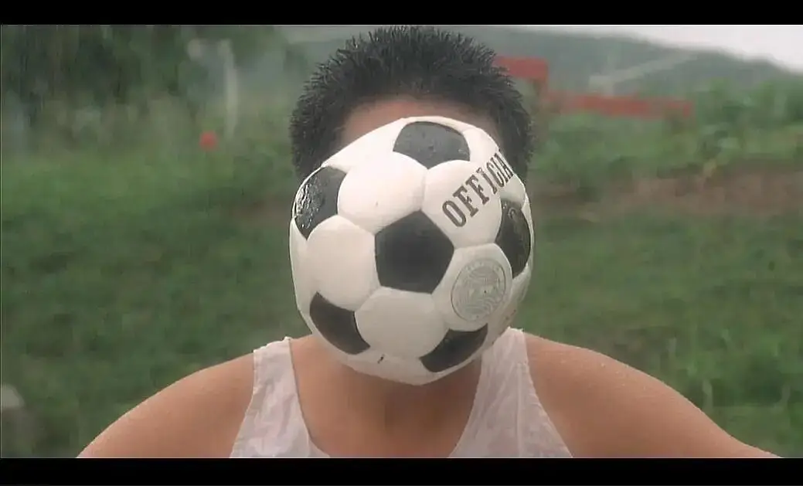
这个结果在我预料之中。
我也理解对方项目负责人，他也是打工人，很多事情他拍不了版，也没有完完全全的责任。
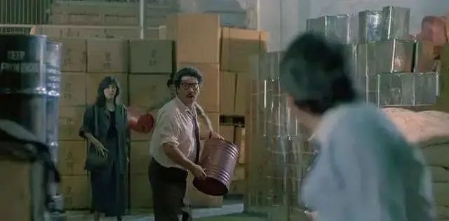
所以，我们本来就不抱太大期望。
我们只是希望他，向经纬更高层的管理者传达业主的诉求。
也希望有政府介入后续协商。
下午结束沟通，回到家里，是已经疲惫了。
焦急的业主时不时会私信我情况。
我不想让他失望，但确实没有更好的消息带给他。
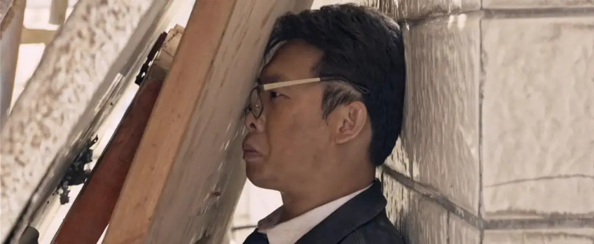
我知道这是个持久战，往后的一段时间。
除了繁重的工作和琐碎的生活。
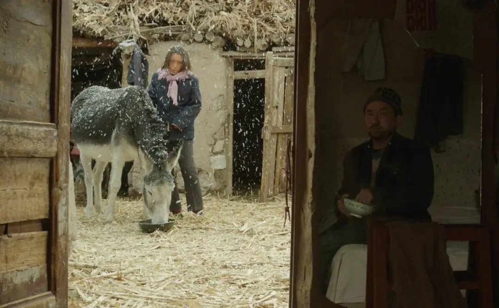
我们的心里要背上这个重重的负担，不敢告诉家里老人。
晚上和大家进行了信息通报。
没有实质性的进展。
猜疑、愤怒、无奈、沉默，各样的情绪在这个抱团取暖的群里流淌着。
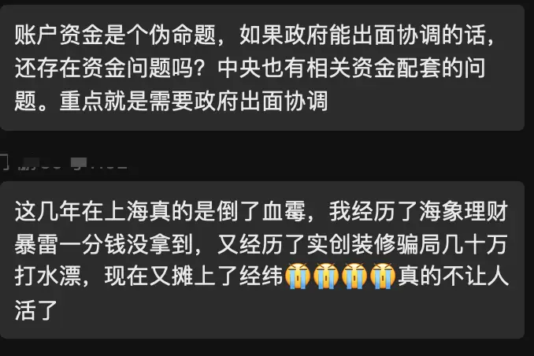
我感慨。
我觉得世间有些凉薄，受伤的总是老实人。
尤其是看到，一位老业主的话：我们二老加起来157岁，拿到房还想享受几年，可如今.......
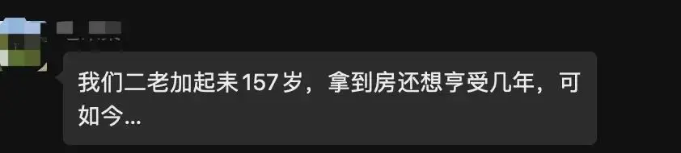
这句话深深扎在我心里。
扎到，我不再感觉到疲惫，而是更加五味杂陈。
我不知道这位未来的老邻居年轻时的故事，但是我看到了他的悲伤和无助。
和房子一旦烂尾后那无法承受的痛。
孩子的眼泪、女人的无奈、老人的叹息。
这三样，是社会良心失去温热的标尺。
无奈，这个社会并不喜欢这些画面。
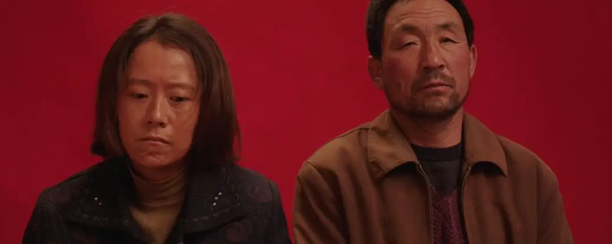
或者一直习以为常的忽视。
这也是我自己这么多年下来，觉得烙在我身上的病症。
从小到大，我们喜欢伟大，我们崇拜光明，我们口里念叨的都是正义。
所以，来到上海，我们盯着的一直是那颗耀眼夺目的东方明珠。
我们很少关注被主流社会甩出去的难民。
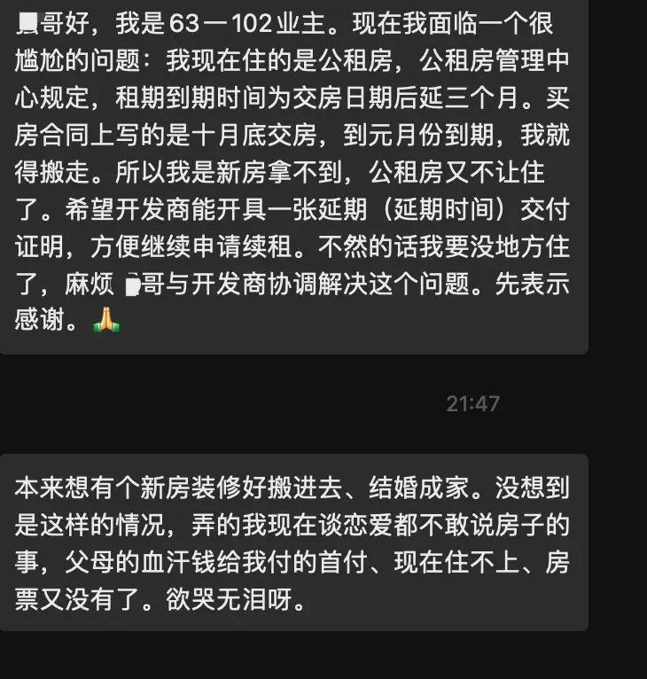
△希望经纬能够配合这位业主的请求
我们的眼睛从来定睛于高大的建筑物，和抖音里的帅哥美女。
却刻意在回避着社会里的阴影，和阴影之下那些刻满岁月痕迹的面孔。
我觉得是时候，我们去一同矫正我们的视力，把我们的目光调整的更广，更深邃。
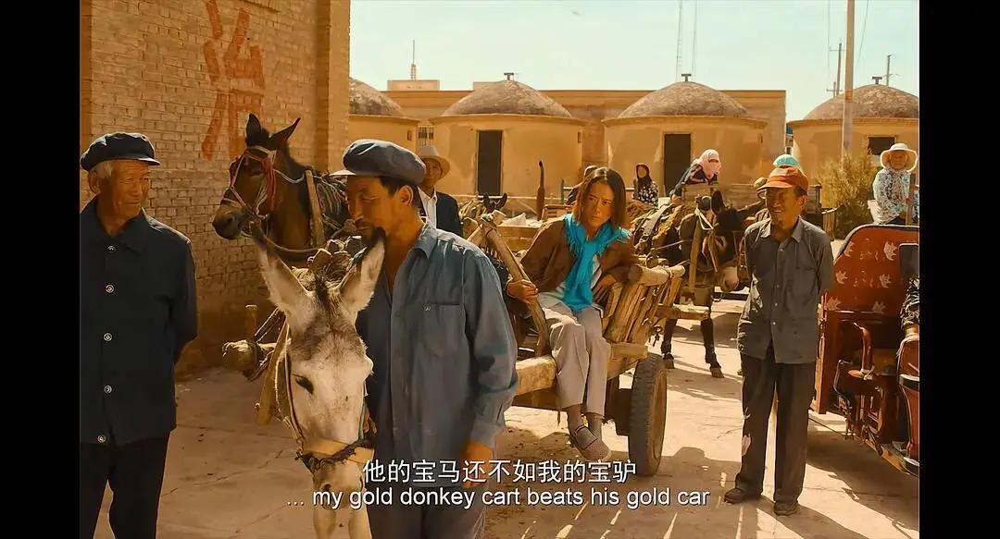
我也希望，老邻居的那句话，能够激励我们这些业主继续努力。
也希望经纬，在下周的沟通会上，拿出诚意和良知。
从“私人飞机”中走出来，给曾经信任过你的业主一个交代。
可能就是一句话，就可以让很多业主睡个安稳的觉。
也希望有关部门，停一下球，能够和我们站在一起，守住“保交楼”的大门。
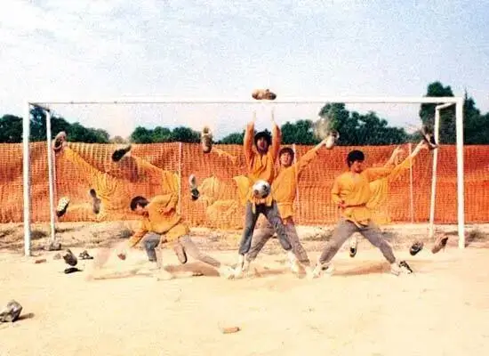
其实，我自己，从内心，并不怕烂尾楼。
而是怕我生活的社会是一个“烂尾楼”。
如是这样，住在哪里又有什么分别。
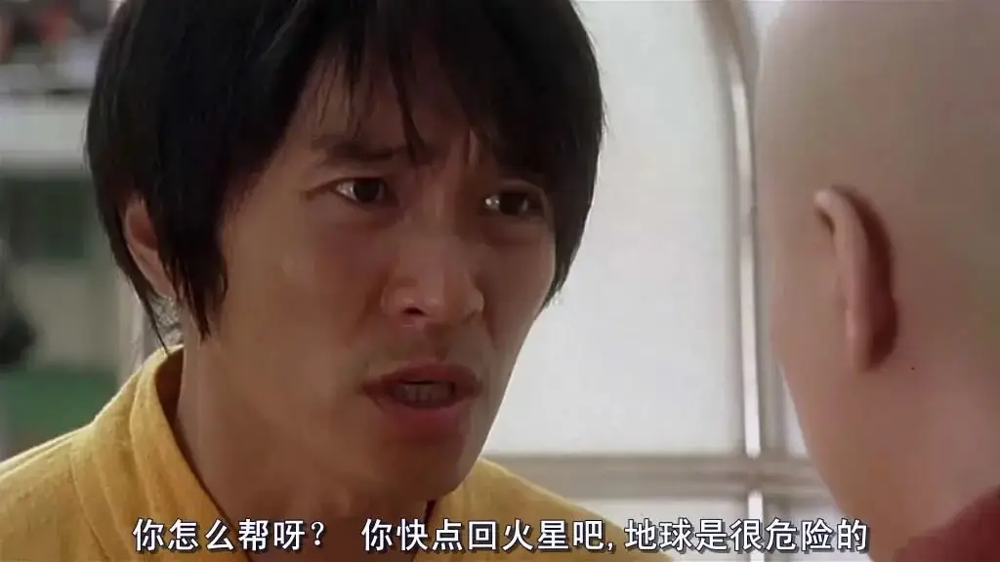
-END-
家丑必须外扬
因为怕被家暴